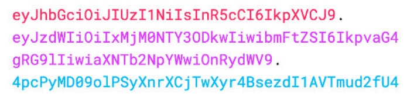
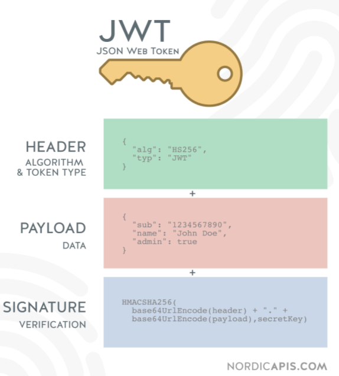

如何实现jwt鉴权机制？说说你的思路
参考答案
一、是什么
JWT（JSON Web Token），本质就是一个字符串书写规范，如下图，作用是用来在用户和服务器之间传递安全可靠的信息

在目前前后端分离的开发过程中，使用token鉴权机制用于身份验证是最常见的方案，流程如下：
- 服务器当验证用户账号和密码正确的时候，给用户颁发一个令牌，这个令牌作为后续用户访问一些接口的凭证
- 后续访问会根据这个令牌判断用户时候有权限进行访问
Token，分成了三部分，头部（Header）、载荷（Payload）、签名（Signature），并以.进行拼接。其中头部和载荷都是以JSON格式存放数据，只是进行了编码

header
每个JWT都会带有头部信息，这里主要声明使用的算法。声明算法的字段名为alg，同时还有一个typ的字段，默认JWT即可。以下示例中算法为HS256
{ "alg": "HS256", "typ": "JWT" } 因为JWT是字符串，所以我们还需要对以上内容进行Base64编码，编码后字符串如下：
eyJhbGciOiJIUzI1NiIsInR5cCI6IkpXVCJ9 payload
载荷即消息体，这里会存放实际的内容，也就是Token的数据声明，例如用户的id和name，默认情况下也会携带令牌的签发时间iat，通过还可以设置过期时间，如下：
{
"sub": "1234567890",
"name": "John Doe",
"iat": 1516239022
}同样进行Base64编码后，字符串如下：
eyJzdWIiOiIxMjM0NTY3ODkwIiwibmFtZSI6IkpvaG4gRG9lIiwiaWF0IjoxNTE2MjM5MDIyfQSignature
签名是对头部和载荷内容进行签名，一般情况，设置一个secretKey，对前两个的结果进行HMACSHA25算法，公式如下：
Signature = HMACSHA256(base64Url(header)+.+base64Url(payload),secretKey)一旦前面两部分数据被篡改，只要服务器加密用的密钥没有泄露，得到的签名肯定和之前的签名不一致
二、如何实现
Token的使用分成了两部分：
- 生成token：登录成功的时候，颁发token
- 验证token：访问某些资源或者接口时，验证token
生成 token
借助第三方库jsonwebtoken，通过jsonwebtoken 的 sign 方法生成一个 token：
- 第一个参数指的是 Payload
- 第二个是秘钥，服务端特有
- 第三个参数是 option，可以定义 token 过期时间
const crypto = require("crypto"),
jwt = require("jsonwebtoken");
// TODO:使用数据库
// 这里应该是用数据库存储，这里只是演示用
let userList = [];
class UserController {
// 用户登录
static async login(ctx) {
const data = ctx.request.body;
if (!data.name || !data.password) {
return ctx.body = {
code: "000002",
message: "参数不合法"
}
}
const result = userList.find(item => item.name === data.name && item.password === crypto.createHash('md5').update(data.password).digest('hex'))
if (result) {
// 生成token
const token = jwt.sign(
{
name: result.name
},
"test_token", // secret
{ expiresIn: 60 * 60 } // 过期时间：60 * 60 s
);
return ctx.body = {
code: "0",
message: "登录成功",
data: {
token
}
};
} else {
return ctx.body = {
code: "000002",
message: "用户名或密码错误"
};
}
}
}
module.exports = UserController;在前端接收到token后，一般情况会通过localStorage进行缓存，然后将token放到HTTP 请求头Authorization 中，关于Authorization 的设置，前面要加上 Bearer ，注意后面带有空格
axios.interceptors.request.use(config => {
const token = localStorage.getItem('token');
config.headers.common['Authorization'] = 'Bearer ' + token; // 留意这里的 Authorization
return config;
})校验token
使用 koa-jwt 中间件进行验证，方式比较简单
/ 注意：放在路由前面
app.use(koajwt({
secret: 'test_token'
}).unless({ // 配置白名单
path: [/\/api\/register/, /\/api\/login/]
}))- secret 必须和 sign 时候保持一致
- 可以通过 unless 配置接口白名单，也就是哪些 URL 可以不用经过校验，像登陆/注册都可以不用校验
- 校验的中间件需要放在需要校验的路由前面，无法对前面的 URL 进行校验
获取token用户的信息方法如下：
router.get('/api/userInfo',async (ctx,next) =>{ const authorization = ctx.header.authorization // 获取jwt const token = authorization.replace('Beraer ','') const result = jwt.verify(token,'test_token') ctx.body = result注意：上述的HMA256加密算法为单秘钥的形式，一旦泄露后果非常的危险
在分布式系统中，每个子系统都要获取到秘钥，那么这个子系统根据该秘钥可以发布和验证令牌，但有些服务器只需要验证令牌
这时候可以采用非对称加密，利用私钥发布令牌，公钥验证令牌，加密算法可以选择RS256
三、优缺点
优点：
- json具有通用性，所以可以跨语言
- 组成简单，字节占用小，便于传输
- 服务端无需保存会话信息，很容易进行水平扩展
- 一处生成，多处使用，可以在分布式系统中，解决单点登录问题
- 可防护CSRF攻击
缺点：
- payload部分仅仅是进行简单编码，所以只能用于存储逻辑必需的非敏感信息
- 需要保护好加密密钥，一旦泄露后果不堪设想
- 为避免token被劫持，最好使用https协议
作答思路：
实现JWT（JSON Web Token）鉴权机制的基本思路如下：
- 生成JWT：在用户登录成功后，服务器端生成一个JWT，并将其发送给前端。
- 前端保存JWT：前端收到JWT后，将其存储在客户端，通常存储在localStorage或sessionStorage中。
- 发送JWT：前端在每次与服务器端通信时，将JWT作为请求头（如Authorization: Bearer <token>）发送给服务器端。
- 服务器端验证JWT：服务器端收到请求后，从请求头中提取JWT，并验证其有效性。
- 访问控制：根据JWT中的信息，服务器端决定是否允许用户访问受保护的资源。
考察要点：
- JWT生成：理解服务器端如何生成JWT，包括签名的算法、密钥等。
- JWT存储和传递：理解前端如何存储和传递JWT，以及JWT在请求头中的格式。
- JWT验证：理解服务器端如何验证JWT的有效性，包括验证签名和检查过期时间。
- 访问控制逻辑：理解服务器端如何根据JWT中的信息控制用户对资源的访问。